第 4 章 · 連續型機率分配
基礎觀念
在進入具體分配（均勻、常態、指數）之前，先把連續型的「通用規則」整理好。所有具體分配都按下列規則運作。
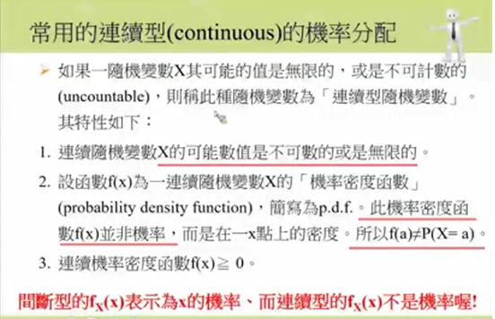
① PDF 三大性質
一個函數 $f(x)$ 要能被稱為「合法的機率密度函數」，必須同時滿足以下三條：
-
非負性
$$f(x) \ge 0 \quad \text{對所有 } x$$密度不能是負的，否則積分會出現「負面積」，無意義。
-
規範性（總面積 = 1）
$$\int_{-\infty}^{\infty} f(x)\,dx = 1$$整條曲線下、跟 X 軸圍成的總面積 = 1（總機率公理的連續版本）。
-
區間機率 = 區間積分
$$P(c \le X \le d) = \int_c^d f(x)\,dx \ge 0$$想算 X 落在某段範圍的機率？對該段積分（= 曲線下面積）。
- $f(x)$
- 機率密度函數（PDF），輸入 $x$、輸出密度
- $\int_{-\infty}^{\infty}$
- 對整條實數線積分
- $c,\ d$
- 要查詢機率的區間端點（$c < d$）
- $\int_c^d f(x)\,dx$
- $[c, d]$ 內曲線下面積，就是該區間的機率
② CDF 與「F(b) − F(a)」神級公式
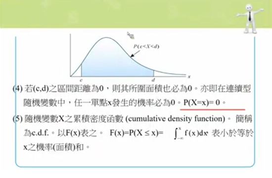
連續型有一個額外重要的工具：累積分配函數（cumulative distribution function, c.d.f.）。
CDF 把「從負無窮一路積分到 $x$」這件事打包成一個函數，方便重複查詢。直觀上 $F(x)$ 就是「到 $x$ 為止累積了多少機率」。
兩個威力一次到位：
- 不用真的積分：只要 CDF 在兩端點的值相減就好（常態查表就是這個邏輯）
- ≤ 和 < 完全等價：因為連續型 $P(X = a) = 0$，差一個點的機率是 0
- $F(x)$
- 累積分配函數（CDF），輸入位置 $x$，輸出「到 $x$ 為止的累積機率」
- $P(X \le x)$
- 「$X$ 不超過 $x$ 的機率」
- $F(b) - F(a)$
- 從 −∞ 累到 $b$ 的面積，減掉從 −∞ 累到 $a$ 的面積 = 剛好 $[a, b]$ 之間的面積
③ 三種陰影區域：中段、左尾、右尾
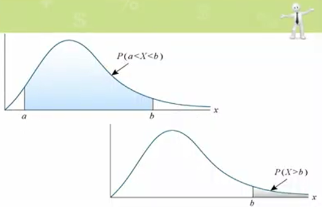
互動：切換三種陰影
點按鈕切換要算的範圍，看陰影位置與對應公式如何變化。a = −1, b = 1（固定示意）。
連續型機率永遠對應「曲線下的某塊陰影面積」，但「想算的範圍」不同，陰影位置也不同：
| 想算什麼 | 陰影位置 | 用 CDF 怎麼算 |
|---|---|---|
| 中段 $P(a \le X \le b)$ | $a$ 到 $b$ 之間 | $F(b) - F(a)$ |
| 左尾 $P(X \le b)$ | $-\infty$ 到 $b$ | $F(b)$ |
| 右尾 $P(X > b)$ | $b$ 到 $+\infty$ | $1 - F(b)$ |
考試常常題目混合使用：例如「成績高於 80 的機率」是右尾、「成績低於 60 的機率」是左尾、「成績介於 60 到 90 之間」是中段。看到題目先判斷是哪一種，再代公式。
④ 期望值與變異數（積分版）
連續型的 $E(X)$、$\mathrm{Var}(X)$ 跟離散型「定義一致、性質一致」，差別只在：
把離散型的 $\sum$ 換成 $\int$、把 $P(X=x)$ 換成 $f(x)\,dx$，就是連續型的公式。
實際算題時，先算 $E(X^2) = \int x^2\, f(x)\,dx$，再減掉 $[E(X)]^2$。比直接套定義式 $\int(x-\mu)^2 f(x)\,dx$ 容易得多。
- $x \cdot f(x)$
- 「值 × 密度」——對應離散型的 $x \cdot P(X=x)$
- $\int x\, f(x)\, dx$
- 沿整條數線把「值 × 密度」加總，得到平均
- $(x - \mu)^2$
- 每個 $x$ 距離平均的「偏差平方」
- $E(X^2)$
- $X$ 平方後的期望值，要先算 $\int x^2\, f(x)\,dx$
四大支柱速查
所有連續型分配的觀念都站在這四根支柱上：
$\int_{-\infty}^{\infty} f(x)\,dx = 1$
$P(X = a) = 0$ 永遠成立；≤ 與 < 可互換
機率、期望值、變異數三者都靠 $\int$
$F(x) = \int_{-\infty}^{x} f(t)\,dt$；區間機率 = $F(b) - F(a)$
選擇題 · 連續型基礎
具體分配
下面三個分配都遵守上面四大支柱，差別只在 PDF 長什麼樣子、$E(X)$ 與 $\mathrm{Var}(X)$ 怎麼算。
均勻分配 U(a, b)
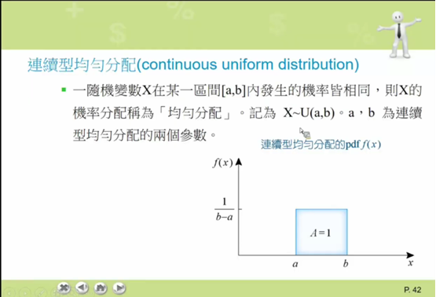
- $U(a, b)$
- 「Uniform」均勻分配，在 $[a, b]$ 範圍內每個位置的密度都一樣
- $a,\ b$
- 分配的下界與上界（$a < b$）
- $f(x)$
- 機率密度函數。對均勻分配是定值 $\dfrac{1}{b-a}$，畫出來是一條水平線
- $E(X)$
- 期望值（Expected Value），就是「平均數」
- $Var(X)$
- 變異數（Variance），衡量資料分散程度。標準差 $\sigma = \sqrt{Var(X)}$
每個點的密度都一樣，是最簡單的連續分配。等公車是典型應用。
選擇題 · 均勻分配
常態分配 N(μ, σ²)
- $N(\mu, \sigma^2)$
- 常態分配，第一個參數是平均數、第二個是「變異數」（不是標準差！）
- $\mu$
- 讀作「mu」。平均數，決定鐘形曲線的中心位置（左右平移）
- $\sigma$
- 讀作「sigma」。標準差，決定曲線的胖瘦：$\sigma$ 越大越扁、越平坦
- $\sigma^2$
- 變異數，是標準差的平方
- $\pi$
- 圓周率 $\approx 3.14159$
- $e$
- 自然指數的底 $\approx 2.71828$
- $(x-\mu)^2$
- 「離平均數的距離平方」——這就是為何曲線左右對稱：$x$ 偏左還是偏右一樣遠，密度一樣
歷史與別名
常態分配理論最早由法國數學家 De Moivre 提出，約一百年後由 Gauss 與 Laplace 進一步研究。因此它有多個名稱：
- 常態分配（normal distribution）
- 鐘形分配（bell-shaped distribution）— 因外型而得名
- 高斯分配（Gauss distribution）— 紀念 Gauss
為何重要？
自然界與人類行為的大群體資料**大部分都呈現常態分配**（身高、體重、測量誤差、IQ 等）。即使原始資料非常態，當樣本數 $n$ 很大時，根據大數法則與中央極限定理也可以用常態近似。它是推論統計的基礎。
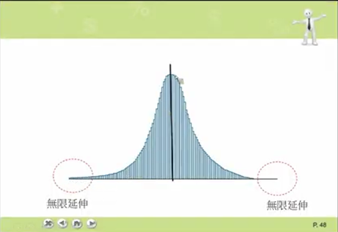
常態曲線的 8 大特性
- 連續且非負：$f(x) \ge 0$ 對所有 $x$。
- 總面積 = 1：$\int_{-\infty}^{\infty} f(x)\,dx = 1$。
- 兩個參數：$\mu$（位置）與 $\sigma^2$（變異數），記為 $X \sim N(\mu, \sigma^2)$。
- 對稱於 μ：故 μ = Me = Mo（平均數 = 中位數 = 眾數），這是常態分配的獨特特徵。
- σ 控制胖瘦：σ 愈大資料愈分散（矮胖）、σ 愈小資料愈集中（高瘦）。
- 反曲點：在 $\mu - \sigma$ 與 $\mu + \sigma$ 處各有一個反曲點（在這兩點，曲線的凹凸方向改變）。
- 無限延伸：X 範圍 $-\infty < x < \infty$，曲線永遠不與 X 軸相交。
- 經驗法則：以 μ 為中心、$\pm k\sigma$ 區間的機率：見下表。
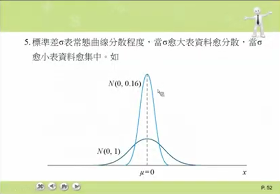
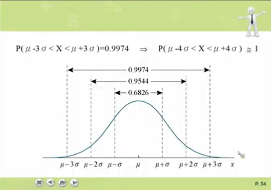
| 區間 | 涵蓋機率 | 大致比例 |
|---|---|---|
| $\mu \pm 1\sigma$ | 0.6826 | ≈ 68% |
| $\mu \pm 2\sigma$ | 0.9544 | ≈ 95% |
| $\mu \pm 3\sigma$ | 0.9974 | ≈ 99.7% |
| $\mu \pm 4\sigma$ | $\approx 1$ | 幾乎全部 |
更精確的雙尾 95% 用 $\pm 1.96\sigma$、99% 用 $\pm 2.58\sigma$。
標準化（Z 化）
常態 PDF 沒有解析積分解，且每組 $(\mu, \sigma^2)$ 都不同，不可能為每組做一張表。解法：把任意 $X \sim N(\mu, \sigma^2)$ 透過下列公式轉為標準常態：
- $Z$
- 標準化後的變數，服從 $N(0, 1)$（標準常態）
- $X - \mu$
- 中心化（centering）：把平均移到 0
- 除以 $\sigma$
- 縮放（scaling）：把標準差變成 1
- 查 Z 表
- 標準常態的累積機率值已事先做成「Z 機率分配表」，查表即可
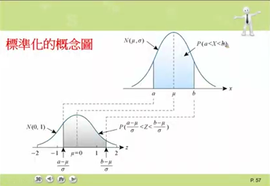
Z 分配的對稱性
標準常態 $Z \sim N(0, 1)$ 是以 0 為中心的對稱分配，這帶來幾個查表必備的等式：
- $P(Z > 0) = P(Z < 0) = 0.5$（左右各佔一半）
- $P(-z < Z < 0) = P(0 < Z < z)$（負半邊可換成正半邊查）
- $P(Z < -z) = P(Z > z)$（左尾 = 對稱右尾）
Z 表的結構（重要！）
💡 想直接查任意 z 值？開速查頁的 Z 表工具輸入 z 即時得到答案。
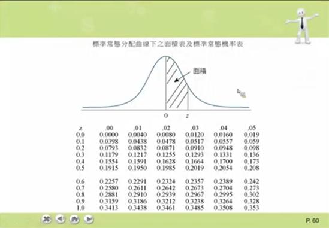
大多數教科書的 Z 表查的是 $P(0 \le Z \le z)$（從中心到 z），而不是從 $-\infty$ 到 z 的完整 CDF。要算其他形式必須先換算：
| 想算什麼 | 查表轉換 | 例（z = 1.0） |
|---|---|---|
| $P(0 \le Z \le z)$ | 直接查表 | 0.3413 |
| $P(Z \le z)$（左尾累積） | $0.5 + P(0 \le Z \le z)$ | 0.8413 |
| $P(Z > z)$（右尾） | $0.5 - P(0 \le Z \le z)$ | 0.1587 |
| $P(-z \le Z \le z)$（對稱中段） | $2 \times P(0 \le Z \le z)$ | 0.6826 |
| $P(-z_1 \le Z \le z_2)$（跨 0） | $P(0 \le Z \le z_1) + P(0 \le Z \le z_2)$ | — |
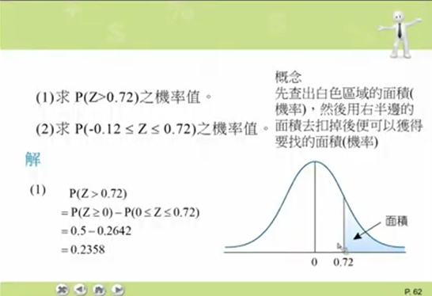
0.72) 例題視覺">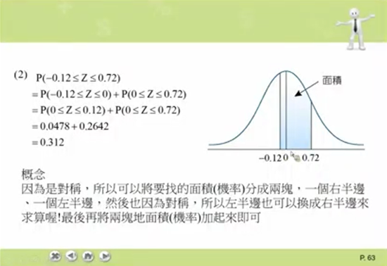
- 畫圖再算：先在常態曲線上塗出要找的陰影，再決定怎麼用 0.5 加減半邊機率
- 跨 0 拆兩塊：跨 0 的區間機率 = 兩個半邊相加
- 負值換正：碰到負 z 用對稱換成正 z 再查
反查 z 值
有些題目給你機率、要你反推 z（例如「成績前 15% 的最低分數」）。流程：
- 把題目要求轉成 $P(0 \le Z \le z) = \text{某數}$
- 從 Z 表內文反查最接近的 z 值
- 若題目要的是 X 而非 Z，再用 $X = \mu + z\sigma$ 還原
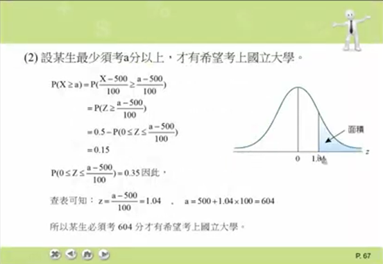
X ~ N(500, 100²)，國立大學錄取前 15%，求最低分數 a。
$P(X \ge a) = 0.15 \Rightarrow P(Z \ge \frac{a-500}{100}) = 0.15$
$\Rightarrow P(0 \le Z \le \frac{a-500}{100}) = 0.35$
查 Z 表：$\frac{a-500}{100} \approx 1.04 \Rightarrow a = 500 + 1.04 \times 100 = \boxed{604}$
常態近似二項分配
當試驗次數 $n$ 大、且成功率 $p$ 不太極端時，二項分配可以用常態分配近似計算，比階乘公式快得多。
- $np$
- 二項分配的期望值（平均成功次數）
- $np(1-p)$
- 二項分配的變異數
- $\sqrt{np(1-p)}$
- 標準差，用於 Z 化
- 近似條件 $np \ge 5,\ n(1-p) \ge 5$
- 確保 $n$ 大且 $p$ 不太極端（不接近 0 或 1）
互動圖表
拖 μ 看曲線左右平移、拖 σ 看曲線胖瘦變化：
選擇題 · 常態分配
指數分配 Exp(λ)
- $\mathrm{Exp}(\lambda)$
- 指數分配（Exponential），描述事件之間的等待時間
- $\lambda$
- 讀作「lambda」。速率參數：每單位時間平均發生 $\lambda$ 次事件
- $e^{-\lambda x}$
- 「$e$ 的負 $\lambda x$ 次方」。$x$ 越大這項越小，所以 PDF 從高處衰減
- $E(X) = 1/\lambda$
- 平均等待時間：事件越頻繁（$\lambda$ 大），平均等的時間越短
- $x \ge 0$
- 等待時間不能為負，所以 $x$ 從 0 開始
描述「波松過程兩次事件之間的等待時間」。λ 越大事件越頻繁，平均等待時間 1/λ 越短。
選擇題 · 指數分配
無記憶性（指數分配的特色）
- $X$
- 隨機變數（這裡代表「等待時間」或「壽命」）
- $s$
- 已經等過的時間
- $t$
- 還想再等的時間
- $\mid$（豎線）
- 條件機率符號，讀作「在...條件下」。$P(A \mid B)$ = 已知 $B$ 發生時 $A$ 發生的機率
- 左式 $P(X > s+t \mid X > s)$
- 「已經等了 $s$ 時間，再等到超過 $s+t$」的條件機率
- 右式 $P(X > t)$
- 「從頭開始等，等超過 $t$」的機率
- 兩式相等
- 表示「過去等了多久不影響未來」——無記憶性
「已經等多久，完全不影響未來的等待時間分配」。物理意義：元件不會老化。連續型中只有指數分配、離散型中只有幾何分配具有此性質。
不適合人類壽命（會老化），但適合電子元件、放射性衰變、客服電話間隔。